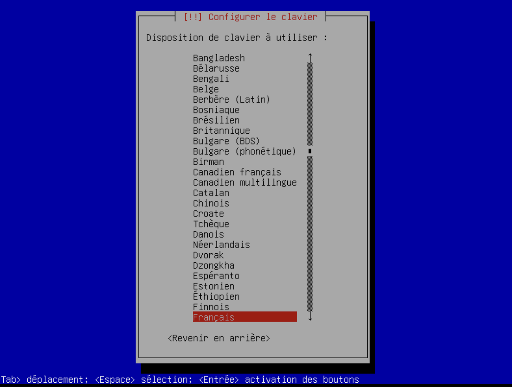

1. Installation de VirtualBox
Téléchargez et installez VirtualBox sur votre PC.
Téléchargement de l'image ISO
Téléchargez une image ISO de Debian à partir du site officiel : Debian Netinst.
2. Création d'une machine virtuelle
- Lancez VirtualBox et cliquez sur « Nouvelle » pour créer une machine virtuelle.
- Suivez les étapes pour nommer la machine et associer le fichier ISO.
- Allouez 3001 Mo de RAM et 2 CPU.
- Choisissez la taille du disque dur, ici 25.94 Go.
Le récapitulatif des informations :
- Il ne reste plus qu’à démarrer la machine en appuyant sur « Démarrer ».
Une fois la machine lancée, divers onglets vont apparaître afin de finir la configuration de la machine, ces onglets porteront principalement sur la configuration de la langue, du compte admin, des mots de passe, etc. Il faudra simplement suivre les étapes demandées.
3. Configuration de la machine
- Le premier est pour savoir si on veut une interface graphique ou pas sur Debian.
- Les étapes à suivre pour la configuration, on commence par la situation géographique, pour l'heure, le format de la date, la langue, nous somme en France, donc nous mettons: "France".
- Configurer de la disposition du clavier, AZERTY pour nous. 
- Configuration de l'hostname, nom de la machine. Nous avons choisi "vbox" car nous utilisons VirtualBox, mais on pourrait choisir un autre nom de machine.
- Configuration du mot de passe du compte "root", l'administrateur sur les systèmes UNIX :
- Configuration d'un nouvel utilisateur, comme demandé dans le sujet, nous choisissons
admin_Gr01_Binome03: - Configuration du mot de passe de cet utilisateur:
- Choix de l'environnement de bureau, nous avons laissé GNOME par défaut, et avons oublié de prendre une capture d'écran.
Une fois la configuration et l’installation terminées, il ne reste plus qu’à entrer le mot de passe et profiter de la machine.
Il ne reste plus qu’à ouvrir le terminal pour entrer des commandes.
4. Addusers et addgroup
-
Pour créer un groupe, vous devez utiliser la commande
addgroupdans le terminal. Cependant, vous pourriez rencontrer une erreur indiquant que la commande est introuvable. Cela s'explique par le fait que notre utilisateuradmin_gr01_binome03n'est pas administrateur. Pour remédier à ce problème, nous pouvons utiliser la commandesudo, sur Linux, afin d'obtenir les droits super-utilisateur pour une commande, c'est-à-dire se substituer à l'utilisateur pour exécuter une commande. Par défaut, l'utilisateur est leroot. Nous pouvons aussi utiliser la commandesu "utilisateur"afin de changer d'utilisateur. Par défaut, on n'a pas besoin de spécifier l'utilisateur si on veut juste passer à l'utilisateurrootsur un système Unix. -
En exécutant les commandes
adduserouaddgroupavecsudo, vous pourriez rencontrer une autre erreur : l'utilisateur par défaut n'a pas le droit d'exécuter cette commande. Il faut donc modifier le fichier/etc/sudoerset ajouter notre utilisateur :admin_gr01_binome03 ALL=(ALL:ALL) ALLà la fin de ce fichier. Nous avons réussi à comprendre cette erreur à l'aide de la documentation de l'entreprise nommée "RedHat", très connue dans l'administration système. Lire la documentation. - Ensuite lorsque les problèmes seront réglés. Un groupe nommé “Binome01” avec l’ID 123 a été créé. Pour ce faire, l’option --system a été utilisée afin de créer un groupe de manière dynamique. De plus, l’option --allow-bad-names a été nécessaire, car le système indiquait que le nom du groupe ne respectait pas les conventions de nommage habituelles.
- Pour créer deux utilisateurs, la commande adduser a été utilisée avec des options similaires que pour créer les groupes. Ainsi, deux utilisateurs ont été créés à l’aide de la commande suivante :
sudo adduser --system --allow-bad-names --gid 123 Binome01_1(2). Il est important de préciser « gid 123 » afin d’ajouter les utilisateurs dans le groupe créé précédemment.
5. Personnalisation d’une commande prompt
Avant de personnaliser un prompt, il est important de définir ce que c’est. Une commande prompt correspond au texte qui apparaît au début de chaque ligne dans un terminal, avant que vous ne saisissiez une commande. Ce texte se trouve juste avant le signe dollar. Par exemple, sur l’image, c’est le texte affiché en vert.
 Que peut indiquer une commande prompt?
Que peut indiquer une commande prompt?
La commande prompt peut fournir diverses informations. Dans notre cas, elle affiche le nom de l’utilisateur ainsi que celui de l’hôte.
Il est également possible de stocker la valeur de cette commande dans une variable, par exemple "DEFAULT". Cela permet de récupérer la commande initiale ultérieurement, comme illustré ci-dessous.
Pour afficher seulement le nom de l’utilisateur dans le prompt, il suffit de modifier la valeur de la variable correspondante et de remplacer par \u.
Cependant, on voudrait ajouter plus d’informations au prompt afin d’avoir une meilleure visibilité car actuellement, seul le nom d’utilisateur apparaît dans la commande prompt. Ainsi, il serait plus pratique d’inclure des informations supplémentaires comme:
- Le répertoire de travail actuel.
- Un indicateur pour savoir si l’utilisateur est un utilisateur normal ou root.
- Une séparation claire entre la commande prompt et les commandes exécutées pour une meilleure lisibilité car les deux sont actuellement collées.
Pour ajouter ces détails, il faut modifier la valeur de la variable PS1 en utilisant : \u:\w\$ car \u affiche le nom de l’utilisateur en cours, \w indique le répertoire de travail actuel. Si le répertoire est long, il affiche un chemin abrégé avec ~ pour représenter le répertoire personnel et enfin \$ affiche le symbole $ pour un utilisateur normal ou # pour l’utilisateur root.
Ainsi on retrouve:
Pour avoir une commande avec de la couleur, il faut modifier la valeur de cette manière, ici la couleur sera rouge : ‘\[\033[01;31m\]\u:\w\$’.
Au final, on obtient le prompt suivant qui est personnalisé et qui nous donne pas mal d’informations :
6. Installation et Configuration de NGINX
Pour installer NGINX sur notre machine Debian, nous devons suivre les étapes suivantes :
- Mettre à jour la liste des paquets disponibles :
- Installer NGINX :
- Démarrer le service NGINX :
- Vérifier que NGINX fonctionne en accédant à l'adresse
http://localhostdans un navigateur :
sudo apt updatesudo apt install nginx
sudo systemctl start nginx7. Déploiement du Site
Pour déployer notre site web, nous avons choisi d'utiliser SCP (Secure Copy Protocol) car nous n'avons pas de licence WebStorm, et c'est infiniment plus simple. Pour simplifier le processus, nous allons configurer le fichier ~/.ssh/config avec un nom (demosrv) et notre clé privée pour une connexion facile. Voici les étapes pour déployer notre site :
- Configurer le fichier
~/.ssh/configavec l'IP de votre serveur, pour nous c'est 192.158.1.20: - Ensuite, sur votre machine, il suffit de modifier le fichier
.ssh/authorized_keysavec votre clé publique, normalement dans.ssh/id_ed25519.pubsur votre système. Vous pouvez aussi utiliser la commandessh-copy-id. Comme vous pouvez voir ma clé publique ssh est:ssh-ed25519 AAAAC3NzaC1lZDI1NTE5AAAAIGi2L7EjwYacccrB4eEY5P8sBG7WXWkb6FMM7zbou/0R - Copier les fichiers du site vers le serveur NGINX avec la commande SCP, (secure copy) qui permet de simplement copier des fichiers via SSH. Comme vous pouvez le voir sur cette image, nous le faisons depuis le terminal de Visual Studio Code, c'est beaucoup plus simple et c'est gratuit pas comme WebStorm:
- Vérifier que les fichiers ont été copiés correctement en accédant à l'adresse
http://192.168.1.20dans un navigateur : - En raison de problèmes de collaboration sur la machine virtuelle par les membres de l'équipe, et du fait qu'une machine virtuelle peut occuper plusieurs gigaoctets, ce qui rend le partage long, nous avons reproduit ces étapes sur un VPS, dont l'IP est :
94.130.181.114. Vous pouvez y accéder via : http://94.130.181.114/.
Host demosrv
HostName 192.168.1.20
User root
IdentityFile ~/.ssh/id_ed25519
scp -r * demosrv:/var/www/html/Avec ces étapes, nous avons installé et configuré NGINX, puis déployé notre site web en utilisant SCP(gratuit et plus rapide).
Pour mettre à jour le serveur web, il suffit de relancer la commande suivante. Cela a été fait plusieurs fois, sans problèmes. Vous pouvez vérifier : scp -r * user@demosrv:/var/www/html/.